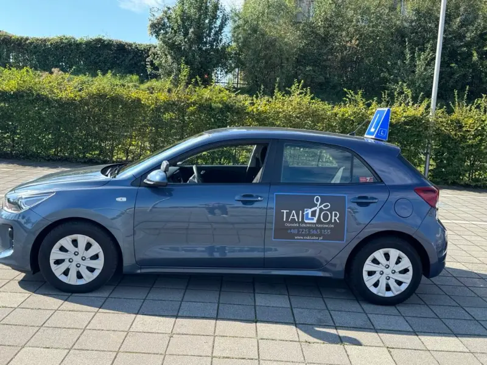

Ile kosztuje prawo jazdy w Gdańsku? Ceny w III kwartale 2026
Barometr cen kursów kat. B w gdańskich szkołach jazdy, opłaty dodatkowe i zdawalność w PORD.
Tu rozwiewamy wątpliwości, analizujemy statystyki i przygotowujemy Cię do roli kierowcy, nie tylko od strony technicznej. To miejsce, w którym teoria spotyka się z gdańską praktyką drogową i realiami egzaminu.
12 wpisów, od najnowszego
Barometr cen kursów kat. B w gdańskich szkołach jazdy, opłaty dodatkowe i zdawalność w PORD.
Nasza wizytówka w lokalnym katalogu firm i prośba o Twoją opinię.
Sprawdź ceny kursów prawa jazdy kat. B w Gdańsku. Porównujemy kursy kat. B manual oraz automat oraz jazdy doszkalające w 2026 roku.
OSK Tailor na 9. miejscu w Gdańsku: zdawalność egzaminu praktycznego kat. B 48,8% w II półroczu 2025 r. przy średniej 44,9%. Dane PORD Gdańsk.

Prawo jazdy w ciąży w Gdańsku – sprawdź, czy można bezpiecznie uczyć się jazdy, kiedy warto zacząć kurs i dlaczego OSK Tailor to dobry wybór.
OSK Tailor Nauka Jazdy Gdańsk dba o bezpieczeństwo osób niepełnoletnich Poznaj Standardy Ochrony Małoletnich obowiązujące w naszym ośrodku.

OSK Tailor Nauka Jazdy Gdańsk – prawo jazdy od 17 lat. Sprawdź zasady, ograniczenia, okres próbny i przygotuj się do bezpiecznej jazdy.

Syntetyczna informacja o zajęciach z pierwszej pomocy w szkole nauki jazdy OSK Tailor Nauka Jazdy Gdańsk. Info. dla przyszłych kierowców.

Kurs blisko domu czy blisko PORD? Zobacz, co daje nauka jazdy w centrum Gdańska: trasy egzaminacyjne, mniej dojazdów i grafik jazd dopasowany do Ciebie.

Prawo jazdy kat. B na automacie w Gdańsku: co oznacza kod 78, dla kogo jest automat, jakie ma zalety i jak później przesiąść się na manual.

Szkoła jazdy w centrum Gdańska, 5 minut od Dworca Głównego: jazdy od pierwszej lekcji na trasach egzaminacyjnych PORD i kurs kat. B szyty na miarę.
OSK Tailor to rodzinna szkoła jazdy w centrum Gdańska: spokojna nauka bez stresu, cierpliwi instruktorzy i kurs kat. B na manualu lub automacie.
Świadomy kierowca to bezpieczny kierowca. Artykuły piszemy na podstawie wieloletniego doświadczenia instruktorskiego i codziennych obserwacji ruchu w Gdańsku, żeby pomóc Ci zdać egzamin, a potem pewnie jeździć.
Analizujemy dane z PORD Gdańsk: co sprawia kursantom największą trudność i jak odebrać prawko już po pierwszym podejściu.
Ranking zdawalności PORDNa przykład kurs prawa jazdy w ciąży: przepisy, komfort, bezpieczeństwo i najlepszy moment na zapis.
Prawo jazdy w ciążyPorównujemy skrzynie biegów i pokazujemy, dlaczego dla wielu osób automat to najkrótsza droga do spokojnej jazdy po mieście.
Kurs na automatSamochody, na których będziesz się uczyć, żeby na egzaminie w PORD wnętrze auta było Ci dobrze znane.
Od eco-drivingu przez parkowanie w ciasnych uliczkach Wrzeszcza po radzenie sobie ze stresem egzaminacyjnym.
Zapisz się online albo zadzwoń do biura. Pomożemy dobrać termin i skrzynię biegów.